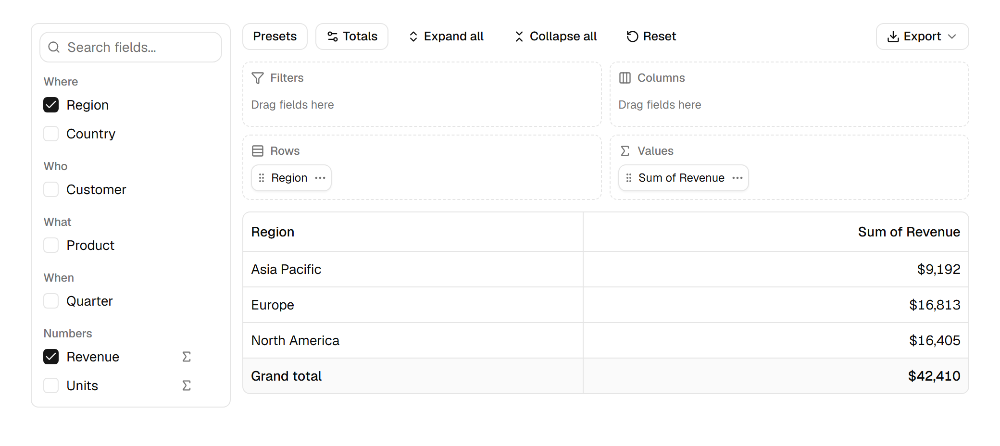
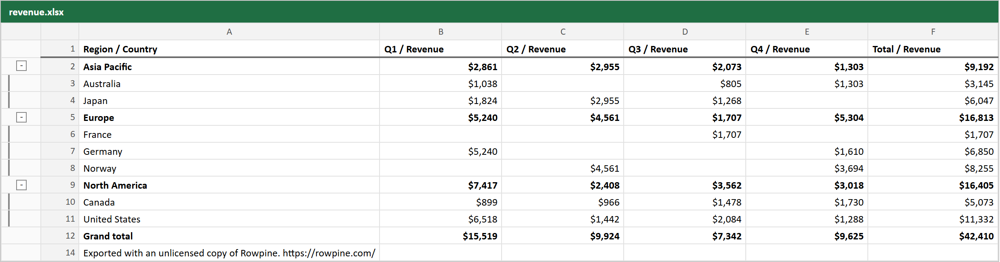

TanStack Table pivot table
TanStack Table groups rows but has no pivot. Build one from code, let users design it with a field list and drop wells, and export it to Excel.
TanStack Table can group rows: regions, then countries under them, with a total on each group row. A pivot table goes one step further and spreads a field across the columns too. Revenue by region down the side and by quarter across the top is a pivot; TanStack has no feature for it.
Building one yourself means reading the distinct values of the column fields, generating a column definition for each combination of value and measure, aggregating every cell, and adding subtotal rows, a total column and a grand total. This guide does it with Rowpine instead, in three steps:
- a pivot from code, rendered with a shadcn/ui table;
- a designer where users drag fields into rows, columns and values themselves;
- an Excel export of whatever pivot is on screen.

Grouping or pivot?#
| TanStack grouping | Pivot | |
|---|---|---|
| Rows | Grouped by one or more fields | Grouped by one or more fields |
| Columns | The columns you defined | Generated from the values of the column fields |
| Cells | Your row data, totals on group rows | Aggregated values at each row and column intersection |
| Totals | Per group row | Per row group, per column, and a grand total |
If your users ask "how much per region, per quarter", they want a pivot.
Install#
The rowpine package has the pivot engine. The pivot registry item installs two components into your project: pivot-table.tsx and pivot-designer.tsx. Add the export menu too for the last step.
npm install rowpine @tanstack/react-table
npx shadcn add https://rowpine.com/r/pivot.json
npx shadcn add https://rowpine.com/r/export-menu.jsonThe examples use orders with a region, country, customer, product, quarter, quantity and amount. Any array of objects works; the Excel guide shows the data.
A pivot from code#
A pivot is a config: fields down the side (rows), fields across the top (cols), and the measures at each intersection (values). usePivot builds it, PivotTable renders it:
import { pivotRowStyle, type PivotConfig } from "rowpine"
import { ExportMenu } from "@/components/export-menu"
import { PivotTable, usePivot } from "@/components/pivot-table"
import { orders, type Order } from "./orders"
const usd = (v: unknown) =>
typeof v === "number" ? `$${Math.round(v).toLocaleString("en-US")}` : ""
// Module scope keeps the config stable; usePivot recomputes when it changes.
const config: PivotConfig<Order> = {
rows: ["region", "country"],
cols: ["quarter"],
values: [{ field: "amount", agg: "sum", label: "Revenue", format: usd }],
rowHeader: "Region / Country",
}
export function SalesPivot() {
const pivot = usePivot(orders, config, { numFmt: '"$"#,##0' })
return (
<div className="grid gap-3">
<div className="flex justify-end">
<ExportMenu table={pivot.table} fileName="revenue" pdfTitle="Revenue" rowStyle={pivotRowStyle} />
</div>
<PivotTable pivot={pivot} />
</div>
)
}What each part does:
| Key | What it does |
|---|---|
rows |
Fields down the side, outermost first. Each one is a level you can expand and collapse. |
cols |
Fields across the top, outermost first. Each distinct value becomes a column group. |
values |
The measures: field, agg, label and an optional format. Several measures sit side by side under each column. |
rowHeader |
The header of the first column. Default: the row fields joined with /. |
rowSubtotals |
Group rows carry subtotals. Default true. |
grandTotalRow, grandTotalCol |
The grand total row and the Total column. Default true. |
agg is one of sum, avg, min, max, count, countDistinct, first or last, or your own function from the values under a cell to the number to show. The sales commissions demo uses a custom one for a tiered commission.
Keep the config stable, at module scope or in useMemo. usePivot recomputes when the config changes, which is what you want when the user changes it and wasted work on every render otherwise.
The third argument, { numFmt: '"$"#,##0' }, is the Excel number format for the value columns. It only affects exports.
Let users build the pivot#
A fixed pivot answers one question. The designer lets users ask their own: a field list on the left, four wells (Filters, Columns, Rows, Values), and the pivot under them.
import { pivotRowStyle, type PivotField, type PivotPreset } from "rowpine"
import { ExportMenu } from "@/components/export-menu"
import { PivotDesigner } from "@/components/pivot-designer"
import { orders, type Order } from "./orders"
const usd = (v: unknown) =>
typeof v === "number" ? `$${Math.round(v).toLocaleString("en-US")}` : ""
const fields: PivotField<Order>[] = [
{ field: "region", label: "Region", kind: "dimension", group: "Where" },
{ field: "country", label: "Country", kind: "dimension", group: "Where" },
{ field: "customer", label: "Customer", kind: "dimension", group: "Who" },
{ field: "product", label: "Product", kind: "dimension", group: "What" },
{ field: "quarter", label: "Quarter", kind: "dimension", group: "When" },
{ field: "amount", label: "Revenue", kind: "measure", group: "Numbers", format: usd },
{ field: "quantity", label: "Units", kind: "measure", group: "Numbers" },
]
const presets: PivotPreset[] = [
{
name: "Revenue by region and quarter",
layout: {
rows: ["region", "country"],
cols: ["quarter"],
values: [{ field: "amount", agg: "sum", label: "Revenue" }],
filters: [],
},
},
{
name: "Units by product",
layout: {
rows: ["product"],
cols: ["region"],
values: [{ field: "quantity", agg: "sum", label: "Units" }],
filters: [],
},
},
]
export function SalesDesigner() {
return (
<PivotDesigner
data={orders}
fields={fields}
presets={presets}
pivotOptions={{ numFmt: '"$"#,##0' }}
actions={(pivot) => (
<ExportMenu table={pivot.table} fileName="sales" rowStyle={pivotRowStyle} />
)}
/>
)
}
A field's kind decides where it can go: a dimension goes to Rows, Columns or Filters, a measure to Values or Filters. group sorts the field list under headings. On a value chip, users pick the aggregation from a menu.
presets fill the Presets menu with layouts you wrote. A layout is plain JSON (rows, cols, values, filters), so you can also save the user's layout with onLayoutChange and restore it later with layout: in local storage, in your database, or in the URL.
Export the pivot to Excel#
Both components give you pivot.table, a table view of the pivot for the exporters. Pass it to the export menu with pivotRowStyle, which makes the group, subtotal and grand total rows bold:
<ExportMenu table={pivot.table} fileName="revenue" rowStyle={pivotRowStyle} />
In the file:
- The first column header is your
rowHeader, and each value column joins its column group with the measure:Q1 / Revenue. One header row keeps the sheet easy to filter and sort. - Row groups become Excel outline levels.
- The cells are numbers with the
numFmtyou passed, so they can be summed and charted. - Every row is in the file, including groups collapsed on screen, and only the rows the designer's filters let through.
exportXlsx(pivot.table, { rowStyle: pivotRowStyle }) does the same from your own button, and PDF and CSV work the same way.
Render it with your own TanStack table#
PivotTable is a regular shadcn/ui table. If you would rather use the table component you already have, createPivot returns everything TanStack needs: data (rows nested through subRows), columns (column definitions with header groups for the column fields) and table (for exports).
import * as React from "react"
import {
createExpandedRowModel,
rowExpandingFeature,
tableFeatures,
useTable,
type ColumnDef,
} from "@tanstack/react-table"
import { createPivot, type PivotTreeRow } from "rowpine"
import { orders } from "./orders"
const features = tableFeatures({
rowExpandingFeature,
expandedRowModel: createExpandedRowModel(),
})
export function useRevenuePivotTable() {
// rows nested through subRows, plus TanStack column definitions
const pivot = React.useMemo(
() =>
createPivot(orders, {
rows: ["region", "country"],
cols: ["quarter"],
values: [{ field: "amount", agg: "sum", label: "Revenue" }],
}),
[]
)
return useTable({
features,
data: pivot.data,
// Plain column objects (id, header, accessorFn, columns); give them v9's type.
columns: pivot.columns as unknown as ColumnDef<typeof features, PivotTreeRow>[],
getSubRows: (row) => row.subRows,
initialState: { expanded: true },
})
}Render the result as any tree table: row.depth for the indent, row.getToggleExpandedHandler() on the first cell. The value columns come with a cell that formats each number, so <table.FlexRender cell={cell} /> shows 4,701.35, not 4701.349999999999; give the measure a format for currency (rowpine 1.0.3 and later). Register more features, such as sorting, the same way as for any TanStack table. The pivot in your own table example has the full component.
License#
CSV export is free. Pivot tables, the designer, and Excel and PDF export run without a key, with one notice line in exported files; a license removes it and is a one-time payment per developer with a year of updates. Try the designer with the guided tour on the home page, or open the sales pivot demo.
Try it in your project
Everything runs without a license key; Excel and PDF files carry one notice line until you add one.
More guides

Export TanStack Table to Excel with grouped rows
Groups become Excel outline levels and group totals become SUBTOTAL formulas, from the table you already render.

shadcn data table export to PDF
An export menu on the shadcn payments table, then a PDF report with a title, headline numbers and page setup.